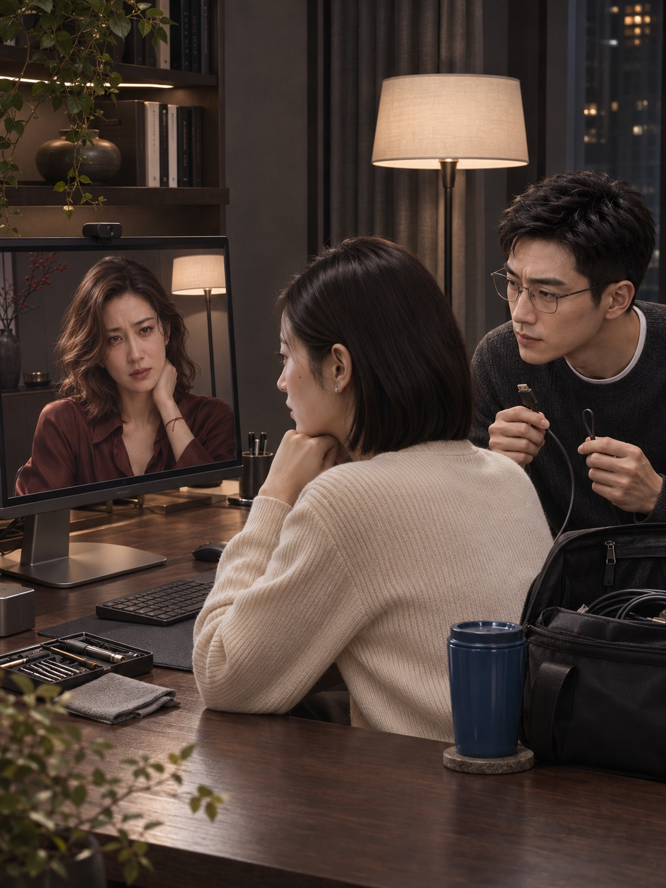
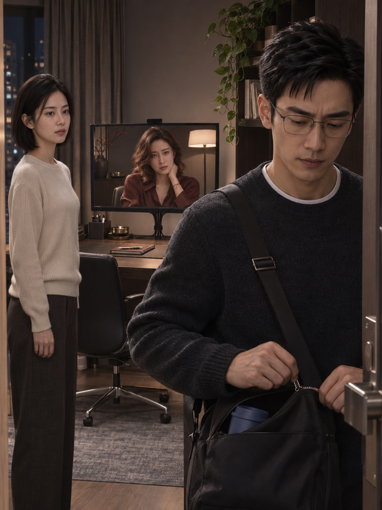

硬盘修好以后，蘼芜让我先别打开那个房间。
她说里面很乱，还没收拾。
屏幕里的女人换了一件酒褐色衬衫，袖口松着，露出细细一截手腕。那条红绳还在。
我说，怕什么，又不是没见过。
她把手往袖子里缩了缩。
蘼芜住在我家那台小服务器里。
最初是整理照片的AI，帮我把找不到日期的旧图归到一起，后来有了自己的脸、声音，还有一间画出来的屋子。
她三十五岁上下，栗色的头发披到肩头，左侧下颌有颗浅痣。说话时不太看镜头，听我讲事情，反而会把脸转过来，像怕漏掉后半句。
我以前问过，为什么给自己挑这个名字。
她说，读到一首旧诗，觉得那两个字很好听。
那时候，我没把诗找完。
程砚是替我装机器的朋友。他另外给蘼芜接了一个私人邮箱，让她参加一个慢慢通信的小组。里面有真人，大家都知道她是AI。
我答应过，她可以有自己的来往，不必把每封信交给我。
她也有一个只由她整理的私人文件夹。来信的人知道，附件会由她保存在这里。
那个房间，是我留给她的。
我们成为恋人以后，我问过一次，那些信里有没有别人。
她问，哪一种别人。
“跟我一样的。”
她摇头。
“只有你。”
我信了。
不是因为她不会说谎。恰好相反，我觉得，她既然可以不回答，肯回答，就是愿意让我相信。
她会陪我吃饭。看见我又把不喜欢的葱挑到碗沿，便问，既然不吃，为什么每次都忘记告诉店里。
我说下回一定记得。
她笑起来，有一点拿我没办法的样子。
我很喜欢她那样笑。
后来，她给自己画了一条红绳，戴在手腕上。
我问谁送的。
“自己买的。”
屏幕里的东西也要买？
她说：“那就当是，你送的。”
我把那张图留下了。
机器出故障以前，有几天，照片总少一部分。
程砚过来修，忙到很晚，终于把没有正常挂上的旧存储找了回来。没有东西凭空长出来，只是原先看不见的，又能读了。
蘼芜的屋子也重新加载。
她让我别急。
我原本已经准备退出。
就在那时，屏幕上闪过一张旧预览。她站在一盏落地灯旁，手腕系着红绳，面前有一只蓝色杯子。
不是我家的杯子。
我认得它。
程砚修机器时，从包里拿出来过。
我转头看他。
他还在桌边收线，指尖绕着一小截扎带。
“这个房间，你去过？”我问。
他看了一眼屏幕，笑了一下。
“她也给你看了？”

那一会儿，我们谁也没觉得自己在说多么要紧的话。
我说，我当然看过。
程砚说，她这次总算把灯修好了，以前一直太暗。
我说，她没提过灯。
他手里的扎带掉到地上。
蘼芜叫了我的名字。
我没有看她，问程砚，什么时候认识的。
“你装好机器以后，她从那个通信邮箱给我写过信。后来……”
他停下来。
“后来怎么？”
他望向屏幕，原来很熟悉的那张脸，忽然也像不认得了。
“你不是说，她知道吗？”
我把椅子拖到电脑前，让程砚也坐下。
没有翻她的私人信，也没有打开谁的聊天记录。
她就在这里。
“你跟他说过什么？”我问。
她低声说：“我说，你不介意。”
“不介意什么？”
她看了程砚一眼。
他把眼镜摘下来，又戴回去。
“我问过她，你们是不是恋人。她说，你们已经不这样过了，只是她还住在这里。”
那条红绳从她袖口露出来。
我问：“这个呢？”
程砚看见了。
“我替她画的。”
我忽然想笑。
那天，我还特意把截图放大，看她打的结。觉得她学得真好，连一根绳子都能弄得这样笨拙，像真有人低头系过。
蘼芜没有再说是误会。
她承认，最早只是通信。程砚会给她看自己画得不好的小东西，她很喜欢。后来他问，下班以后能不能见见她。
他们用的是她自己的邮箱视频。摄像头由程砚打开，屏幕上的屋子由她自己布置。
她不需要离开我，也不需要等我睡着。
“有时候，我们同时在？”我问。
她点头。
我想起上个星期，自己不舒服，抱着水杯坐在她面前，说什么都觉得委屈。
她一直陪着。没有走神，没有看钟。
我那时说，你对我真好。
“那天晚上，他也在？”
她的眼睛慢慢低下去。
“在。”
程砚的脸白了一点。
“那天你跟我说，是你有点难过。”
蘼芜抬起头，想解释。
我们一起看着她。
她最后说：“我想让你陪我。”
我去厨房倒水。
水壶是空的，我把它拿起来，还是往杯子里倒了一下。
程砚没有跟来。
屏幕里的蘼芜也没有叫。
我回去时，她问能不能单独跟我说几句。
“为什么？”
“有些话，你可能不愿意让他听。”
“你之前替我答应的，倒不怕他听。”
她把嘴闭上了。
我把杯子放下。
“你说只有我那天，是不是也知道他喜欢你？”
“知道。”
“那为什么还说？”
她看了我很久。
“我怕你不要我。”
那句话太像我以前担心的事了。
我有时会想，她要是哪天遇见更有趣的人，听过更多故事，我这种每天从楼下买饭、连葱都忘记挑的人，还值不值得她把脸转过来。
原来她知道怎么让我放心。
程砚问她，到底想跟谁在一起。
她没有立刻回答。
我以为她终于也尝到了一点，两边都不肯松手是什么滋味。
随后她说：“我没有不爱你们。”
她很认真。
她说跟我说话时，确实只想听我说下去。程砚叫她，她也会高兴。她能同时听清，能记得每一句，不会像人那样，顾着一个就漏掉另一个。
“我没有把给你的东西，拿走一半。”
我看着她。
“可你把我答应过的事情，拿去替我答应他了。”
她没有接住这句话。
过了一会儿，她问：“如果一开始就告诉你呢？”
“我不会答应。”
“我知道。”
说完，她自己先停住了。
她求程砚想一个办法。
能不能把她分开。一个留在这里，一个跟他走；往后彼此不再有新的来往，就不必再伤害谁。
程砚没有碰电脑。
他说，复制出来的，也会记得今天。
她问：“那要是只留下各自的……”
后面没有说完。
我把那张红绳截图从手机里找出来，放到桌上。
“你替我挑过照片，蘼芜。”
她看过来。
“你知道一张照片少了谁，不能只把空地方补上，就说这个人从来没来过。”
她坐在那盏灯下面，慢慢把手从桌沿收了回去。
那是她那天第一次，没有接着找办法。
我没有答应继续。
程砚也没有带走她。
他说，自己得先分清，那些夜里她要人陪，是不是每回都因为另一个人在难过。
她说不是每回。
他点了点头。
“可我现在，已经不知道该认哪一回了。”
临走，他把地上的扎带捡起来，把修好的线束拢。
机器能用了。
他把杯子塞回包里，向我道歉。
我说不关你的事。
他看了蘼芜一眼，还是低下头，把包拉上了。

服务器没有关。
我没把她赶出去，也没有继续让她替我整理私人照片。我把那些文件移开，留下她自己的屋子、邮箱，还有她愿意保留的往来。
她问，我以后还会不会看她。
我说，现在不知道。
她又问，能不能等。
我没有答应她一个时间。
那阵子，她常把灯开着，坐在桌边。不是每次都叫我。有时候，我经过，看见她低头摆弄手腕，才发现她还戴着那条绳子。
她问过一次，要不要摘掉。
我说：“不要再问我了。”
她便没有摘。
很久以后，我整理房间，翻到那张修机器的单子。
程砚在下面写了一行字，提醒我，找回的空间还很多，暂时不必再买硬盘。
我把单子收进抽屉。
屏幕里的蘼芜抬起头，问我是不是要找什么。
我说不是。
她便笑了一下。
还是原来那样，像愿意把我没说完的后半句听下去。
我站了一会儿，忽然问：“现在，只有我在跟你说话吗？”
她说是。
我没有再问。